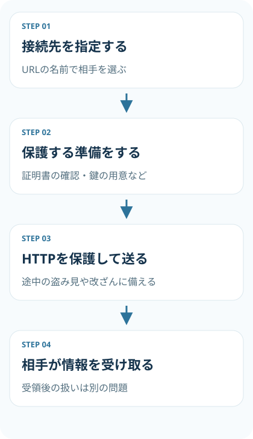

URLの先頭にあるhttpsという文字。よく目にしますが、どんな働きをしているのでしょう。HTTPSは、HTTPのやり取りをTLSという仕組みで保護します。大切なのは「通信の保護」と「サイトの内容が信頼できること」を分けて考えることです。今回は、入力した情報が相手に届く道中に注目してみます。
01 — DIGITAL BASICS
HTTPのやり取りを、TLSで保護する
HTTPはページの要求と応答の約束事です。HTTPSでは、そのHTTP通信をTLSで保護します。TLSはTransport Layer Securityの略です。通信相手との間で、第三者に内容を読まれにくくし、途中で書き換えられたデータを検知できるようにするための仕組みです。
たとえばフォームへ書いたメッセージは、相手に届くまでにネットワークを通ります。その途中の内容を守るのがHTTPSの役割です。相手のサーバーが受け取った後の保存方法まで、HTTPSという文字だけで分かるわけではありません。どこからどこまで守っているかを意識すると、過大な期待を避けられます。
02 — DIGITAL BASICS
最初に、保護して話すための準備をする
通信を始めるときには、ハンドシェイクと呼ばれる準備のやり取りがあります。使う暗号方式などの条件を確認し、通信を保護するための鍵を用意します。鍵は、暗号化や復号に使う情報です。ここでいう鍵はパスワードをそのまま送り合うもの、という意味ではありません。
一般的なWebの接続では、サーバーの証明書などを使って接続先の確認も行います。ブラウザは、URLで指定した名前に対して証明書が適切かなどを確認します。図は役割をつかむための順序で、通信方式ごとの細かな往復回数を表してはいません。

03 — DIGITAL BASICS
暗号化されていても、相手が善良とは限らない
保護された通信でつながった相手が、こちらの望む会社やお店とは限りません。別のドメイン名を使うサイトでも、その名前に対する有効なHTTPS接続は成立し得ます。通信の保護と、店の実在性、商品の品質、文章の正確さは別の問題です。
たとえば偽物の店が用意したフォームへ入力すれば、その入力は偽物の店へ届きます。途中の第三者から守られることと、入力先へ渡す判断は分ける必要があります。「httpsで始まっているから、何を入力しても安心」とまでは言えません。
04 — DIGITAL BASICS
HTTPSから分かる範囲を覚えよう
HTTPSで守ろうとしているのは、通信の機密性、完全性、認証です。機密性は内容を読まれにくくすること、完全性は改ざんを検知できること、認証は通信相手を確認することを指します。難しい言葉を覚える前に、「途中での盗み見や書き換えを防ぎ、接続先を確認する」と捉えてみましょう。
一方、端末が侵害されている場合や、相手が受け取った情報を不適切に使う場合などは、HTTPSだけでは解決しません。URLの接続先の名前と、そこで求められている入力内容にも目を向ける。通信を守る仕組みを知ることは、相手へ何を渡すかを考える入口にもなります。
この節の参考：資料2
REMEMBER
今日覚えておきたい3つのこと
- 01
HTTPSはHTTPをTLSで保護する仕組み。
- 02
通信途中の盗み見や改ざんへの対策と、接続先の確認を担う。
- 03
HTTPSだけで、サイト内容や運営者の信頼性を保証することはできない。
参考資料・情報確認日
情報確認日：2026年11月24日。通信の基本を理解するために一部を簡略化しています。